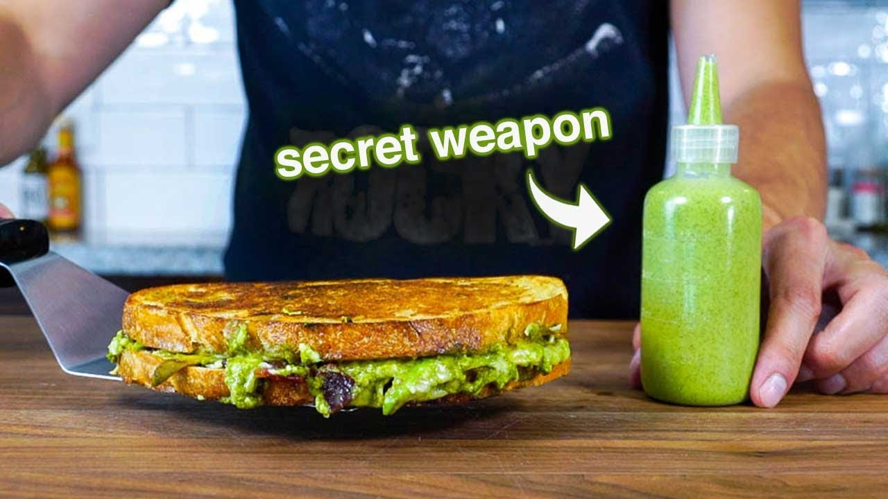

Green Sauce Grilled Cheese

Description
The green sauce as an awesome twist
to the classic grilled cheese sandwich
that you can also put on anything your
heart desires!
Ingredients
- For the sauce:
- Cilantro
- Green onions
- A clove of garlic
- Avocado
- Mayonaise
- Honey (or the sweetner of your choice)
- Jalapeno
- For the sandwich:
- Sourdough bread
- Pepper Jack cheese
- Bacon
Steps
- In a blender, add the Ingredients
for the sauce.
- Slice the bread
- Slice the bacon in small pieces
- Cook the bacon until crispy and set aside
- Over medium heat, melt butter and place
in a slice of bread
- Add a slice of cheese on top of the
bread, and then add your bacon, and
close with the other slice
- Keep flipping the sandwich until
the outside is crispy and the cheese
is melted
- Open your sandwich and add the sauce
- Enjoy!
Home